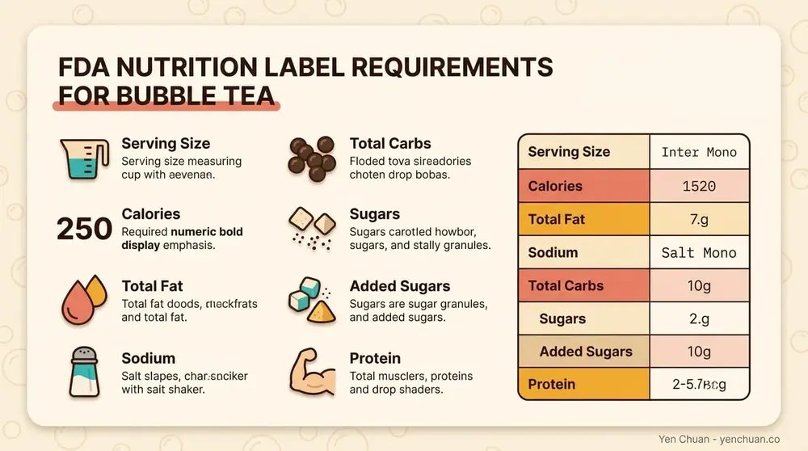
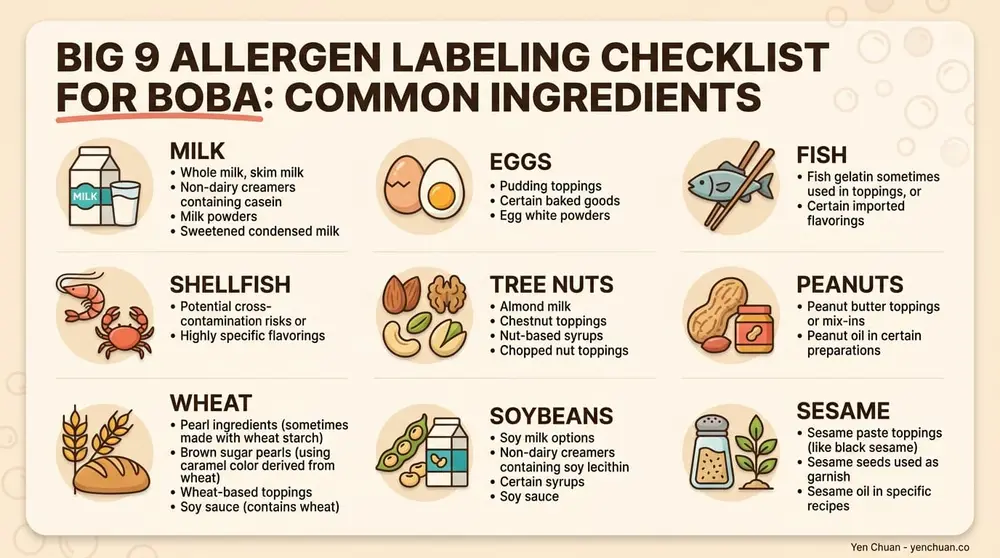

文章 / 經營與採購
Bubble Tea Nutrition Labeling: FDA Importer Guide
這篇是英文原文，尚未完成繁體中文翻譯。中文選單與相關商品連結不會切回英文介面。

查看英文原文（尚未翻譯）
Selling bubble tea in the US requires more than great flavor. Your ingredient labels must comply with FDA regulations, or you risk fines, recalls, and customer trust damage. Whether you're importing tapioca pearls, fruit syrups, or specialty ingredients, understanding nutrition labeling, allergen disclosure, and food import requirements protects your business.
This guide walks through FDA requirements for bubble tea ingredients, common compliance mistakes, and how to partner with suppliers who provide compliant labels.
FDA Nutrition Facts Panel Requirements
Most bubble tea products require a Nutrition Facts panel on the label. Plain teas and herbal teas traditionally fell under a nutrition labeling exemption, but this changes when you add ingredients.
When Nutrition Labeling Is Required
Once you add tapioca pearls, sweeteners, flavorings, milk, or any other ingredient to tea, the product triggers nutrition labeling requirements. The FDA requires a complete Nutrition Facts panel listing:
- Serving size (in standard units like fluid ounces for beverages)
- Calories
- Total fat, saturated fat, and trans fat
- Cholesterol
- Sodium
- Total carbohydrate (including dietary fiber and total sugars)
- Added sugars (separate line item)
- Protein
- Vitamin D, calcium, iron, and potassium
The FDA's Food Labeling Guide (PDF) provides detailed formatting and calculation requirements for each nutrient.
Added Sugars Declaration
Bubble tea often contains significant added sugars. The FDA requires you to declare added sugars separately on the Nutrition Facts panel under "Total Sugars." This must appear as a percentage of daily value, making sugar content immediately visible to consumers. High-sugar formulations may require additional front-of-package disclosures depending on your brand positioning.
Ingredient Declaration Rules
Every ingredient in your bubble tea formula must appear on the label in descending order by weight. This includes water, tea, sweeteners, tapioca, milk products, and flavorings.
Declaration Format and Common Names
Use the ingredient's common or usual name—not scientific names. For example:
- Write "caramel color" not "class IV caramel coloring"
- Write "natural vanilla flavor" not "vanillin extract"
- Write "high fructose corn syrup" not "glucose-fructose syrup"
If an ingredient itself contains multiple sub-ingredients (like a pre-made caramel syrup), you can declare it as the single ingredient name or list all sub-ingredients in parentheses. Most suppliers provide their own compliant ingredient statements, but verify them against the FDA's 21 CFR Part 101 regulations.
Sub-ingredient Disclosure
When an imported syrup or tapioca supplier gives you an ingredient list, check whether their labeling complies with FDA naming standards. Non-compliant names may trigger FDA warning letters or product hold-ups at customs.
Allergen Labeling: The Big 9
The Food Allergen Labeling and Consumer Protection Act (FALCPA) requires you to clearly label the "Big 9" major food allergens: milk, eggs, fish, crustacean shellfish, tree nuts, peanuts, wheat, soybeans, and sesame.
How to Label Allergens
You must declare allergens using one of two methods:
Method 1 (Parenthetical): Include the allergen name in parentheses when the ingredient is a less common form. Example: "whey (milk)" or "sesame tahini (sesame)."
Method 2 (Contains Statement): Use a dedicated "Contains:" line below the ingredient list. Example: "Contains: Milk, Sesame" or "Contains: Tree Nuts (Almond)."

Common Allergen Sources in Bubble Tea
- Milk: Creamer powders, condensed milk, flavored syrups, cheese-flavored powders
- Tree nuts: Almond milk, hazelnut syrups, matcha powder additives
- Sesame: Sesame seeds in toppings, sesame tahini in specialty drinks
- Wheat: Tapioca pearls made with wheat starch fillers (verify with supplier)
- Soy: Soy-based creamers, soy lecithin in flavoring compounds

Cross-contact (unintentional allergen presence during manufacturing) is not required to be labeled under FALCPA, but you should still inform customers if your facility handles multiple allergens. Many bubble tea shops disclose this voluntarily for liability protection.
Serving Size Standards for Beverages
The FDA sets serving sizes based on "amounts of foods and beverages that people are actually eating," not recommended amounts. For beverages, serving size is expressed in fluid ounces.
Reference Amounts for Common Bubble Tea Containers
- 12 oz container or smaller: Label as 1 serving
- 16 oz container: Label as 1 serving (between 1–2 servings is rounded to 1)
- 20 oz container: Label as 1.5 to 2 servings depending on product
- 32 oz or larger: Calculate servings based on Reference Amounts Customarily Consumed (RACC)
Most bubble tea is sold in 16-20 oz cups, which FDA typically classifies as a single-serving container. If you sell a larger 32 oz size, you must calculate and declare multiple servings per container.
The FDA's Guidance for Industry: Serving Sizes provides detailed tables for all food categories, including beverages.
Imported Ingredient Compliance
Many bubble tea ingredients—tapioca pearls, flavored syrups, tea concentrates, and specialty toppings—come from overseas suppliers. Importing food into the US requires prior notice to the FDA and compliance with labeling standards before the product arrives at port.
Prior Notice Requirements
Under the Bioterrorism Act, you (or your importer/distributor) must submit FDA Prior Notice (PN) for all imported food at least 2–8 hours before arrival, depending on transport method:
- Land (road): 2 hours before arrival
- Land (rail): 4 hours before arrival
- Air: 4 hours before arrival
- Water: 8 hours before arrival
As of October 1, 2026, prior notice for food arriving by international mail must also include the mail service name and tracking number.
Prior notice is submitted through the FDA's PNSI system, and confirmation is required before the shipment is released at customs.
Compliance Before Import
Your overseas suppliers must provide:
- Compliant ingredient statements matching FDA common naming standards
- Nutrition facts data if the ingredient will be repackaged or used in a finished product sold in the US
- Allergen declarations for any Big 9 allergens
- Manufacturing country of origin for CBP labeling
If a supplier cannot provide compliant labeling, the product may be held at customs and eventually refused entry.
Label Placement and Format Requirements
The FDA has strict rules for where and how nutrition information appears on product labels.
Principal Display Panel
The product name, net quantity statement (e.g., "16 fl oz"), and any brand name appear on the principal display panel (the front of the label). The net quantity must be in both metric and US customary units (e.g., "500 mL [16 fl oz]").
Information Panel
The Nutrition Facts panel, ingredient list, manufacturer address, and allergen statements appear on the "information panel"—typically the back or side of the label. The format must follow FDA specifications for font size, spacing, and layout.
Use at least 8-point font for nutrition facts (6-point for certain elements on small packages). Allergen statements require equal prominence to regular ingredient names—don't hide them in small print.
Required Statement of Identity
The product must have a clear statement of identity (e.g., "Brown Sugar Boba Tea," "Taro Bubble Tea Concentrate"). This is separate from brand names and describes what the product actually is.
Country of Origin Marking
While the FDA does not mandate country of origin labels for food under the Federal Food, Drug & Cosmetic Act, US Customs and Border Protection (CBP) requires it for imported products.
CBP Requirements
All imported food containers must be marked with the English name of the country of origin. If your tapioca comes from Vietnam, the container must state "Product of Vietnam" or similar language.
If the product undergoes substantial transformation in another country (significant reprocessing or ingredients added), that country becomes the country of origin. For example, tapioca pearls manufactured in Taiwan but packaged and flavored in Singapore may be labeled "Product of Singapore" under CBP rules.
Front-of-Package vs. Back-of-Package
CBP requires country of origin on the label but does not mandate it on the front. Most brands include this statement on the back or bottom of the package.
Common Compliance Mistakes Boba Shops Make
Understanding what goes wrong helps you avoid fines and recalls. Here are the most frequent violations FDA inspectors find:
1. Missing or Incorrect Allergen Declarations
Mistake: Omitting sesame, tree nuts, or milk allergens because they're considered "minor" ingredients.
Why it matters: Customers with allergies rely on complete allergen statements. Missing allergens trigger FDA enforcement actions and consumer lawsuits.
Fix: Audit your entire ingredient list, including syrups, powders, and toppings. Verify each supplier's allergen statement in writing.
2. Inaccurate Nutrition Facts Data
Mistake: Using generic nutrition data from competitors instead of testing your actual formula.
Why it matters: Calories, sugar, and sodium must reflect your specific recipe. Generic data may be off by 20–50%, triggering FDA action if discovered.
Fix: Send your formula to a lab for nutritional analysis, or use a certified nutrition labeling service. Update data if your recipe changes.
3. Unlisted or Misnamed Ingredients
Mistake: Listing "natural flavors" without specifying allergen sources or using non-standard ingredient names your supplier provided.
Why it matters: The FDA requires common names that match 21 CFR 101 standards. Non-compliant names can result in product holds at customs.
Fix: Use the FDA's Food Labeling Guide to verify each ingredient name. Ask suppliers to rewrite their ingredient statements if needed.
4. Incorrect Serving Size Claims
Mistake: Labeling a 20 oz bottle as 1.5 servings when FDA expects 1 serving for single-serving containers.
Why it matters: Incorrect serving sizes distort nutrition facts percentages and mislead consumers.
Fix: Use the FDA's Reference Amounts Customarily Consumed (RACC) tables for beverages. Most bubble tea fits 1–2 servings per typical container.
5. No Manufacturer Address or Contact Info
Mistake: Omitting company name, address, and phone number on the label.
Why it matters: FDA cannot trace product issues without this information. Missing contact details result in warning letters.
Fix: Include "Manufactured by [Company Name]," full address, and a phone or website for consumer inquiries.
6. Non-Compliant Prior Notice for Imports
Mistake: Importing tapioca, syrups, or other ingredients without submitting FDA Prior Notice, or submitting it after the shipment arrives.
Why it matters: Products held without prior notice can be detained indefinitely or destroyed.
Fix: Submit Prior Notice through FDA's PNSI system 2–8 hours before arrival. Build 2 weeks of lead time into your supply chain for first-time imports.
How to Work with Suppliers for Compliant Labels
Your ingredient suppliers are your first line of defense. A quality supplier provides compliant labels from day one, saving you time and preventing costly recalls.
What to Request from Your Supplier
When ordering imported ingredients—tapioca, syrups, powders, toppings—ask for:
- FDA-compliant ingredient statement: Verify it uses common names matching 21 CFR 101.4.
- Complete allergen declaration: Which of the Big 9 are present? Is cross-contact possible?
- Nutrition facts per serving: Calories, sugars, sodium, protein, and all required nutrients (if applicable).
- Country of origin: For CBP compliance.
- Manufacturing date and shelf life: For you to calculate expiration dating.
- Certificate of Analysis (CoA): Third-party testing showing the product meets safety standards.
Building a Supplier Audit Checklist
Create a simple audit checklist for each supplier:
- ☐ Ingredient statement uses FDA common names
- ☐ All Big 9 allergens are disclosed
- ☐ Nutrition facts data is available and tested
- ☐ Country of origin is clearly stated
- ☐ Supplier provides CoA for food safety
- ☐ Supplier updates formulations or sourcing in writing
- ☐ Supplier responds to FDA compliance questions within 48 hours
A reliable supplier will answer these questions without hesitation. If a supplier refuses to provide allergen or nutrition data, find a new one.
Red Flags with Overseas Suppliers
- Reluctance to provide allergen information
- Vague ingredient statements like "natural mixture" or "proprietary blend"
- No food safety certification (ISO 22000, FSSC 22000, or equivalent)
- Inconsistent or outdated nutrition data
- No documented traceability for ingredients
Request written documentation of all compliance information. Email confirmations create a paper trail if FDA asks questions later.
Summary: FDA Compliance Checklist
Use this checklist before selling any bubble tea product in the US:
Product Labeling:
- ☐ Nutrition Facts panel includes all required nutrients
- ☐ Serving size matches FDA Reference Amounts for beverages
- ☐ Ingredient list is in descending order by weight
- ☐ All Big 9 allergens are clearly disclosed
- ☐ Font sizes and spacing meet FDA standards
- ☐ Company name, address, and contact info are on the label
- ☐ Net quantity statement includes metric and US units
Ingredient Compliance:
- ☐ All suppliers provide FDA-compliant ingredient statements
- ☐ Allergen declarations are documented in writing
- ☐ Nutrition facts data are tested or lab-verified
- ☐ Country of origin is stated for imported ingredients
Import Compliance:
- ☐ Prior Notice is submitted 2–8 hours before shipment arrival
- ☐ All imported ingredients have CBP country of origin marking
- ☐ Supplier provides food safety certifications
Ongoing:
- ☐ Supplier changes or reformulations are documented
- ☐ Nutrition data are updated if your recipe changes
- ☐ Label changes are reviewed before reprinting
FAQ
Q: Do plain bubble teas without added ingredients need a Nutrition Facts label?
A: No. Plain tea and herbal tea are exempt from nutrition labeling under FDA rules. However, once you add anything—tapioca, sweetener, milk—nutrition labeling becomes required. Most commercial bubble tea contains enough added ingredients to trigger labeling requirements.
Q: Can I use the same nutrition facts label for all my bubble tea flavors?
A: Only if the recipes are identical. If brown sugar boba and taro boba have different sugar or ingredient amounts, they require separate nutrition facts panels. Small differences in syrup ratios or toppings may require separate labels. When in doubt, test each formula.
Q: Is sesame labeling required on all bubble tea products?
A: Only if sesame is present in the product or added during manufacturing. However, sesame is now one of the Big 9 major allergens (as of 2023 under the FASTER Act), so you must declare it prominently if used. If your facility handles sesame products, consider voluntary cross-contact labeling.
Q: What happens if I import tapioca without submitting Prior Notice?
A: The shipment may be held at customs indefinitely and eventually destroyed. You'll lose the order and incur storage fees. The FDA can also issue a warning letter if enforcement action is taken. Always submit Prior Notice at least 2 hours before arrival for road shipments, 4 hours for air, and 8 hours for water.
Q: How do I verify my nutrition facts data is accurate?
A: Send your exact formula (with proportions) to a NFXL lab (certified nutrition facts label provider) for analysis. They'll test samples and provide verified nutrition facts data you can put directly on your label. This costs $200–$500 per product but provides legal protection if FDA audits you.
About Yen Chuan
Yen Chuan has been a trusted supplier of premium bubble tea ingredients since 2010. We work with hundreds of bubble tea shops across the US to provide compliant, high-quality tapioca, syrups, teas, and specialty toppings. Our team understands FDA regulations and works closely with manufacturers to ensure all ingredients arrive with complete nutritional data and allergen declarations. Explore our compliant ingredient line or contact our regulatory specialists for help with your specific labeling needs.
Yen Chuan offers full nutritional analysis and FDA-compliant label support for boba shops looking to scale operations. Whether you're a small startup or an established chain, we ensure your ingredients meet every FDA requirement—from allergen declarations to serving size standards. Let our team handle the compliance details so you can focus on serving great bubble tea.
Need help with FDA-compliant labeling for your boba ingredients? Get in touch with Yen Chuan's team — we provide full nutritional data and compliant labels for all our products. Learn more about our customization options for proprietary ingredients.
Sources:
- FDA Food Labeling Guide
- FDA Food Allergen Labeling and Consumer Protection Act (FALCPA)
- FDA Guidance for Industry: Serving Sizes
- FDA Prior Notice Requirements for Imported Food (21 CFR Part 1)
- FDA Country of Origin Labeling (CPG Sec. 560.200)
- 21 CFR Part 101 – Food Labeling
- FDA Importing Human Foods